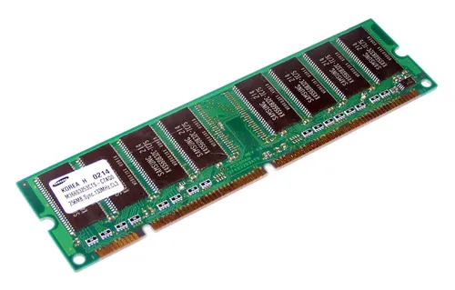
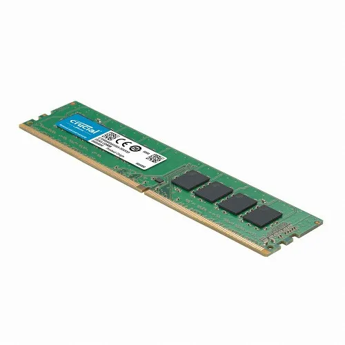
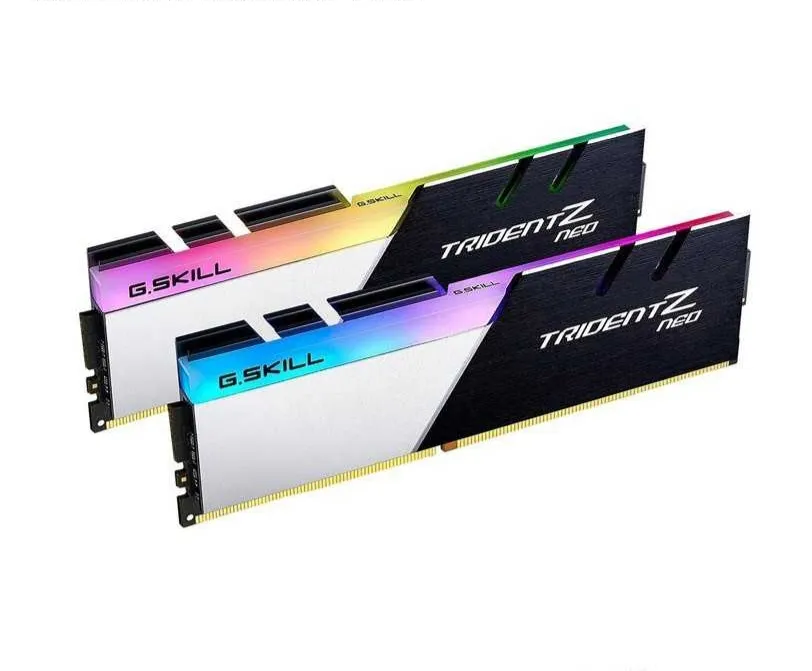
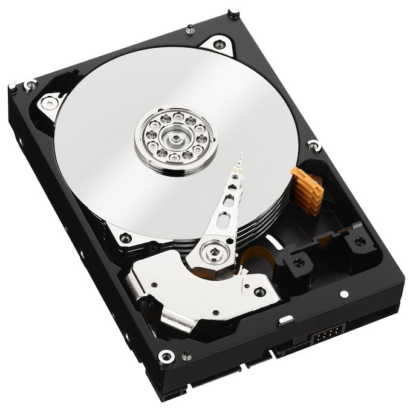

역사
컴퓨터에서 데이터의 최소 단위인 비트(Bit)를 사용해 정보를 표현한다. 디지털 기억 장치의 시초라고 볼 수 있는 천공카드를 시작으로 1956년에 하드디스크, 플로피디스크, CD, 초기에 비해 소형화 된 하드디스크, SSD 등등 발명 되었다.
기억 장치는 컴퓨터에서 데이터를 임시적으로, 또는 영구히 보존하는 장치를 말한다. 비슷한 말로 저장 장치라고도 하는데 이때는 대체로 비휘발성의 기억 장치를 의미한다.
컴퓨터에서 데이터의 최소 단위인 비트(Bit)를 사용해 정보를 표현한다. 디지털 기억 장치의 시초라고 볼 수 있는 천공카드를 시작으로 1956년에 하드디스크, 플로피디스크, CD, 초기에 비해 소형화 된 하드디스크, SSD 등등 발명 되었다.
1차 기억 장치는 주 기억 장치 또는 컴퓨터 메모리라고 불린다. 컴퓨터에서 수치·명령·자료 등을 기억하는 컴퓨터 하드웨어 장치를 가리킨다.
2차 기억 장치는 보조 기억 장치라고 불린다. 보조 기억 장치는 주 기억 장치를 확장한 것으로, 속도가 느리지만, 보통 용량이 상대적으로 크다. 종류로는 하드디스크(HDD), 플로피 디스크, CD, DVD, USB 등이 있다.
|  |  |  |
 |
 |  |